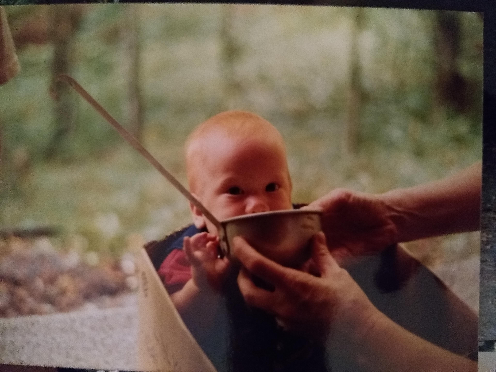

What about him?

- Born in Tampa Fl, learned to sail at a young age.
- Quickly found a love of music in school, studied classical guitar.
- Studied the comedic arts in the skreets.
- Went to the University of South Florida for visual art, slept more than he studied, studied more than he partied, and partied as often as possible.
- Worked in restaurants, online auction companies, department stores, and sold t-shirts at market.
- Settled into a job as a photographer, learned to open up to people quickly and make them laugh.
- Lived in Orlando, ate lots of ramen(the good kind), but never went to Disney and will most likely never go.
- Found a better job working at the university there for the office of Accessability. Worked with students with disabilities on campus and grew much in the process.
- Left that job during the summer of 2020(which will not be named), to pursue a more sustainable career.
- Moved to Portland to learn coding, eat more ramen, and make dreams come true.
What's he into?
- Pragmatism
- Fantsay
- Fermented foods and how to craft the one pickle, to rule them all.
- Yoga, fitness, health, and food.
- Music, both playing and listening.
- All games but especially those that make you think. Puzzles, riddles, mysteries, and exploration
- Bread, baking it, making it, eating it.
- Bike rides, walking, and breathing good.
- American literature, and sometimes Russian literature (or at least the first 200 pages of it).
- Being good.